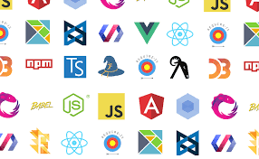
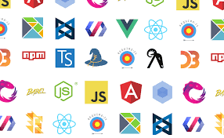
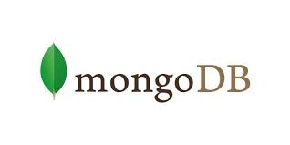
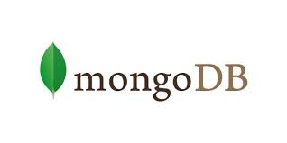

Lucas Vinicius Reis
Independent student for Front-end programming. I want to learn more to be Fullstack, and develop useful tools and applications for users
and the community.
About my life and some concepts about the way that I see the world:

What I think important in my life
- Be free, do it yourself and do the things you want to do.
- Study, study and study.
- Help other people, you will need them.
- Work well in any job.
- Teach, you will learn more by teaching.
- Update yourself and your skills, the world always changing all the time.
- Don't be prejudiced, you will lose talents and learnings.
Other areas that I studied some years ago and now
- I did a simple computing course and it's when I learn about web design.
- Biology: when I was 17, I wanted to be a biology teacher, but I took a different path.
- After finishing high school, I am out of work and, at 18, finally get a job.
- But some months before I start to work, initialize a technical chemistry course by 2 years, going to work and after to the class.
-
After finishing my chemistry course, I give up working on it and recognize that design and other concepts about programming, as I said
before, are my vocation.
- Now I'm studying programming to be a fullstack developer and will try to connect it with other areas like health area.

Tecnhnologies I learned, learning now and will learn:
- HTML (learned)
- CSS (learned)
- Git Bash (learning now)
- Git Hub (learning now)
- Javascript (learning now)
- Frameworks (will learn)
- Python (will learn)
- MongoDB (will learn)


 

 
